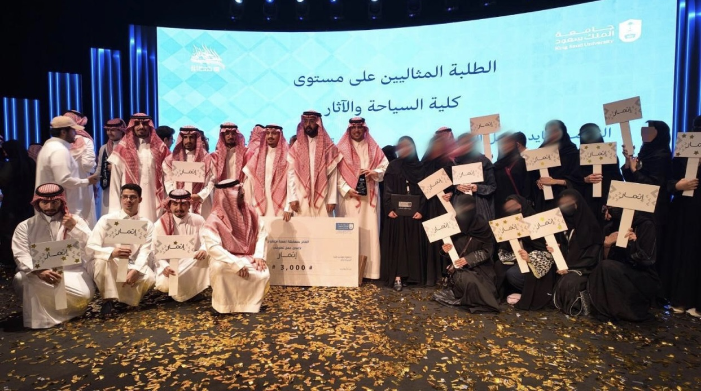

Feb 2026 - Present
Cultural Ambassador - King Saud University
RiyadhChosen to represent the university in cultural transformation initiatives, and supporting institutional culture development.
International Trade & Finance student passionate about international trade, investments, private equity, and venture capital through a financial and economic lens.
I’m Dana AlShammari, an International Trade & Finance student at King Saud University with a strong interest in investments, private markets, venture capital, and global trade policy. My work combines financial analysis, market research, startup evaluation, and student leadership, with a focus on understanding how capital, businesses, and economic policy shape long-term growth.
Startup evaluation, market research, and deal sourcing experience.
Finance committee leadership, cultural ambassadorship.
Chosen to represent the university in cultural transformation initiatives, and supporting institutional culture development.
Worked on startup evaluation, market sizing, financial assessment, deal sourcing, and screening processes within early-stage investment opportunities..
Led budgeting operations, financial processes, and cross-functional coordination across student initiatives and university events.
Develop and structure new club projects aligned with innovation and entrepreneurship goals.
Developed financial content by analyzing sectors and companies, conducting valuations.

Part of the Media Team in the Ahhl Fellowship, a selective six-month consulting focused fellowship that brings together high-potential students from across Saudi Arabia in partnership with firms and institutions including McKinsey & Company, PwC, KPMG, BCG, Roland Berger, Deloitte, EY, and Mandarin Oriental.

Part of the Media Team for the “Road to CFO” program — a three-day finance initiative featuring workshops and sessions led by CFOs and finance leaders from various companies, focused on financial leadership, industry insights, and professional development.

Ethmar Financial Initiative was recognized as one of the top student initiatives within the Student Partnership Program.
Open to finance, investment, strategy, International Tr opportunities.